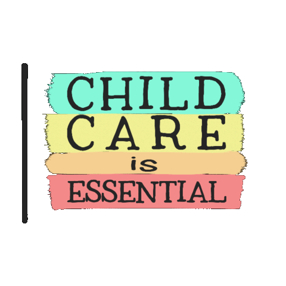

Child Mindding
Child minding, also known as childcare or babysitting, refers to the supervision and care of children in a variety of settings, typically in a home environment. It encompasses a range of responsibilities aimed at ensuring the safety, well-being, and development of children.Child minding is a vital service that supports children's development and provides peace of mind to parents. A comprehensive child minding class prepares individuals with the knowledge and skills needed to care for children effectively, ensuring a safe and nurturing environment. Here's a detailed description along with potential topics that might be covered in a child minding class.
Key Responsibilities of a Child Minder:

- Safety and Supervision
- Constantly monitor children to prevent accidents and injuries.
- Childproof environments to eliminate hazards.
- Basic Care
- Feeding, bathing, and dressing children.
- Diapers and assisting with toilet training for younger children.
- Emotional Support
- Providing comfort and reassurance.
- Encouraging social interaction and conflict resolution among children.
- Educational Activities
- Engaging children in age-appropriate learning activities (e.g., reading, arts and crafts).
- Supporting developmental milestones.
- Health and Nutrition
- Understanding dietary needs and restrictions.
- Administering medication when necessary (with parental permission).
- Communication with Parents
- Keeping parents informed about their child's day, activities, and any issues.
- Understanding parents expectations and routines.
Topics Covered in a Child Minding Class:
- Child Development
- Stages of physical, cognitive, emotional, and social development.
- Understanding developmental milestones.
- Child Safety
- First aid and CPR for children.
- Emergency procedures and creating safe environments.
- Health and Nutrition
- Basics of child nutrition.
- Preparing healthy meals and snacks.
- Behavior Management
- Techniques for positive discipline and behavior modifications.
- Understanding child behavior and emotional responses.
- Activity Planning
- Designing age-appropriate activities and games.
- Incorporating educational elements into play.
- Communication Skills
- Effective ways to communicate with children and parents.
- Active listening and empathy.
- Legal and Ethical Responsibilities
- Understanding local regulations regarding child minding.
- Recognizing the importance of confidentiality and trust.
- Cultural Competence
- Respecting and integrating diverse cultural backgrounds.
- Encouraging inclusivity among children.
- Personal Development
- Self-care and managing stress in childcare roles.
- Professionalism and building a career in child minding.
- Technology Use
- Appropriate use of technology in childcare.
- Monitoring screen time and selecting educational content.
Practical Components:
- Hands-On Training: Practicing care techniques, first aid, and emergency response scenarios.
- Role-Playing: Simulating real-life child minding situations to develop problem-solving skills.
- Observation: Shadowing experienced child minders to learn effective strategies.